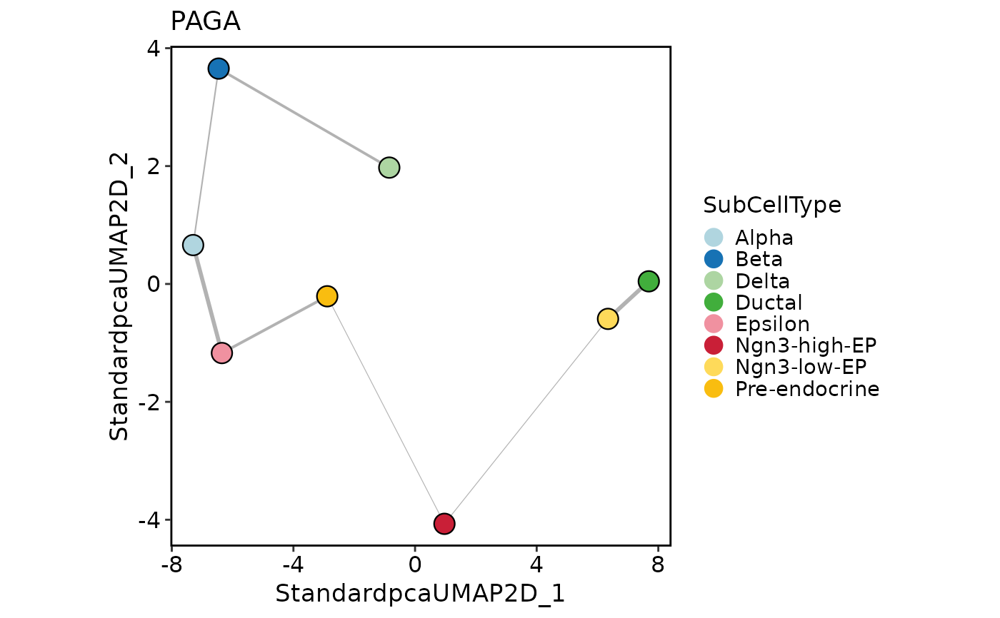
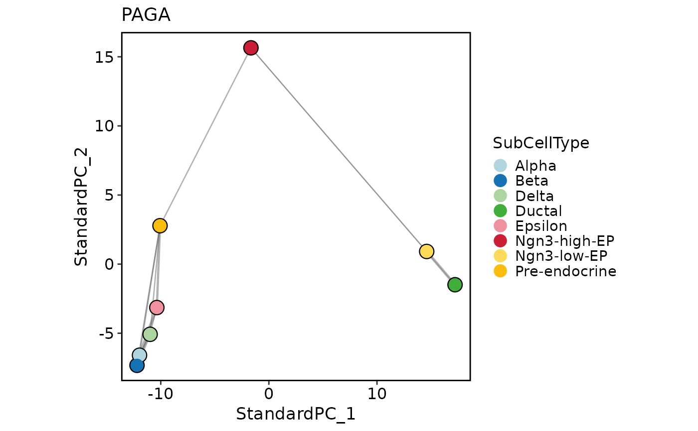
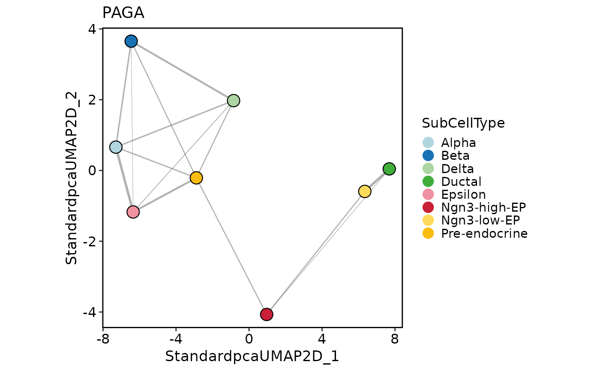
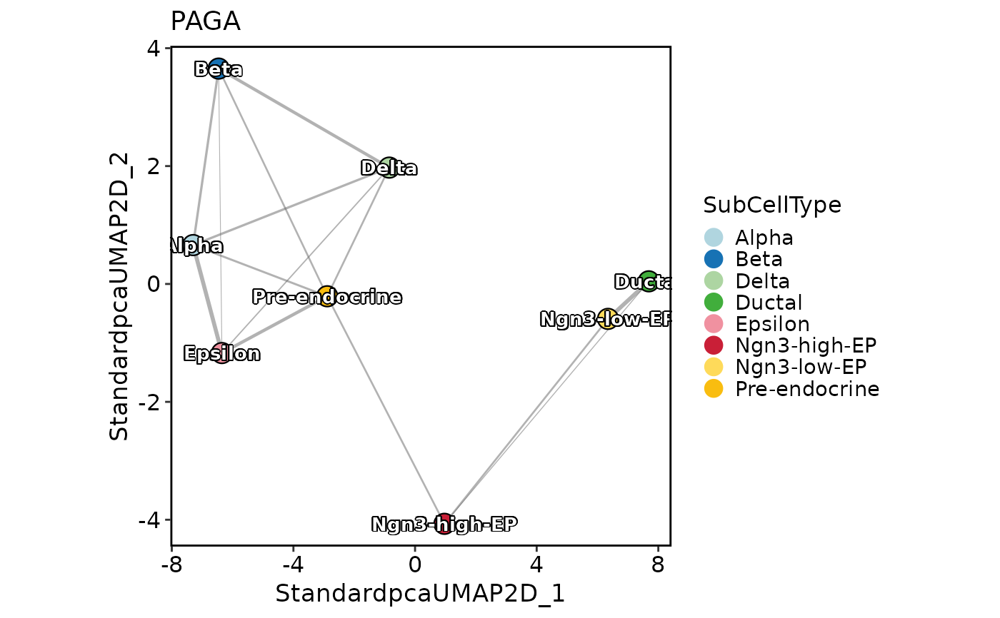
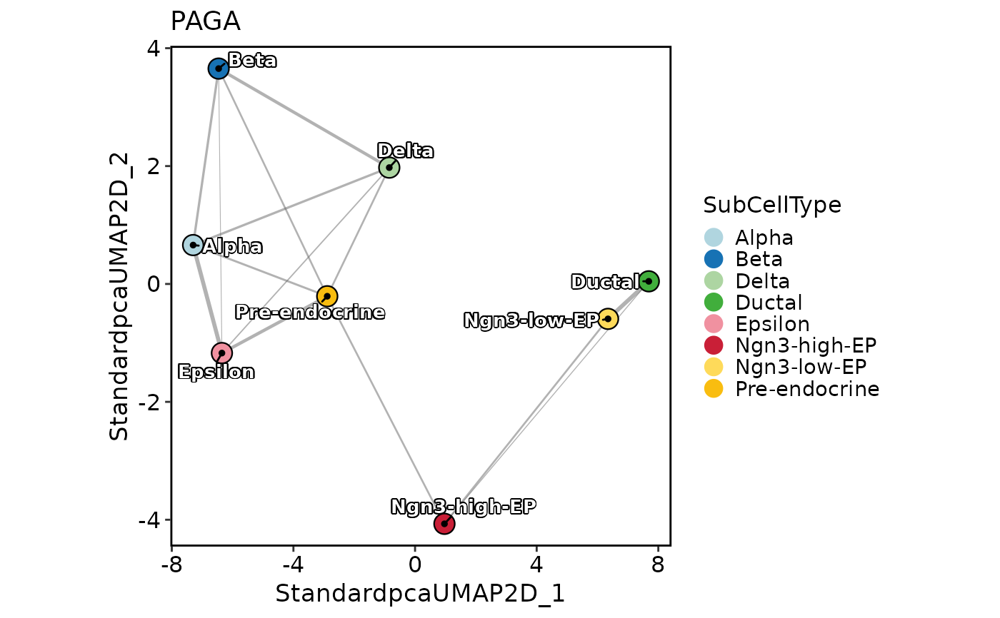
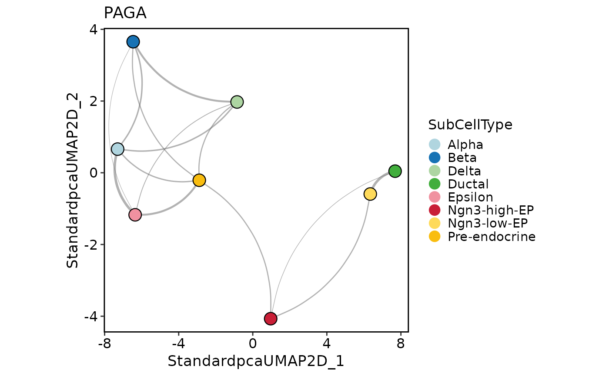
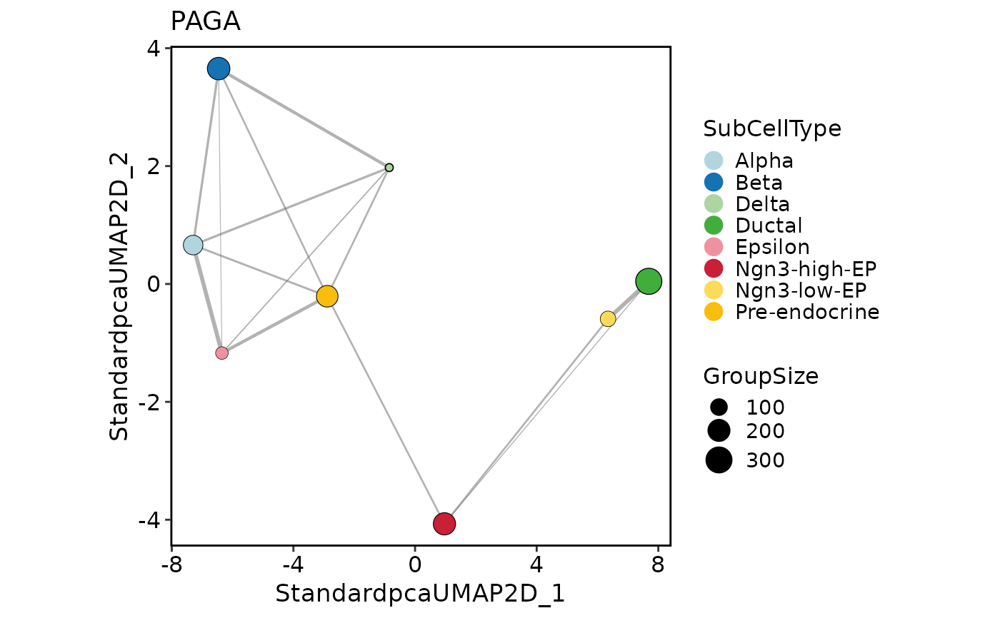
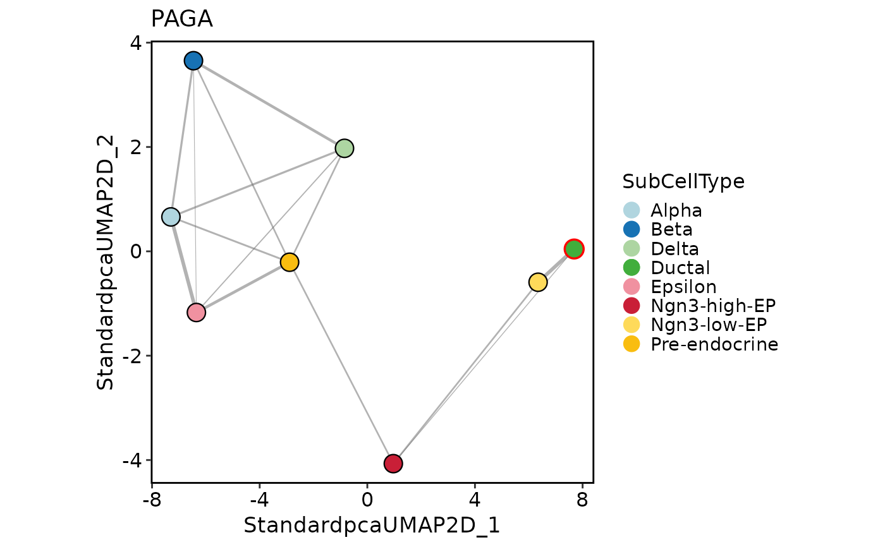

Generates a PAGA plot based on the given Seurat object and PAGA result.
Usage
PAGAPlot(
object,
paga = NULL,
type = "connectivities",
reduction = NULL,
dims = c(1, 2),
cells = NULL,
show_transition = FALSE,
node_palette = "Chinese",
node_palcolor = NULL,
node_size = 4,
node_alpha = 1,
node_highlight = NULL,
node_highlight_color = "red",
label = FALSE,
label.size = 3.5,
label.fg = "white",
label.bg = "black",
label.bg.r = 0.1,
label_insitu = TRUE,
label_repel = FALSE,
label_repulsion = 20,
label_point_size = 1,
label_point_color = "black",
label_segment_color = "black",
edge_threshold = 0.01,
edge_line = c("straight", "curved"),
edge_line_curvature = 0.3,
edge_line_angle = 90,
edge_size = c(0.2, 1),
edge_color = "grey40",
edge_alpha = 0.5,
edge_shorten = 0,
edge_offset = 0,
edge_highlight = NULL,
edge_highlight_color = "red",
transition_threshold = 0.01,
transition_line = c("straight", "curved"),
transition_line_curvature = 0.3,
transition_line_angle = 90,
transition_size = c(0.2, 1),
transition_color = "black",
transition_alpha = 1,
transition_arrow_type = "closed",
transition_arrow_angle = 20,
transition_arrow_length = grid::unit(0.02, "npc"),
transition_shorten = 0.05,
transition_offset = 0,
transition_highlight = NULL,
transition_highlight_color = "red",
aspect.ratio = 1,
title = "PAGA",
subtitle = NULL,
xlab = NULL,
ylab = NULL,
legend.position = "right",
legend.direction = "vertical",
theme_use = "theme_scop",
theme_args = list(),
return_layer = FALSE,
verbose = TRUE,
srt = NULL
)Arguments
- object
A
Seuratobject.- paga
The PAGA result from the Seurat object. Default is
srt@tools[["PAGA"]], falling back tosrt@misc[["paga"]](e.g. a PAGA result converted from an AnnData object).- type
The type of plot to generate. Possible values are
"connectivities"(default) and"connectivities_tree".- reduction
Reduction to plot.
NULLuses DefaultReduction.- dims
Length-2 vector of dimensions to plot.
- cells
Cell names to include.
- show_transition
Whether to display transitions between different cell states.
- node_palette
A character vector specifying the name of the color palette for node groups.
- node_palcolor
A character vector specifying the names of the colors for each node group.
- node_size
A numeric value or column name of
nodespecifying the size of the nodes.- node_alpha
A numeric value or column name of
nodespecifying the transparency of the nodes.- node_highlight
A character vector specifying the names of nodes to highlight.
- node_highlight_color
A character vector specifying the color for highlighting nodes.
- label, label_insitu, label.size, label.fg, label.bg, label.bg.r
Group labels.
label_insitu = FALSEuses numbers instead of group names.- label_repel, label_repulsion, label_point_size, label_point_color, label_segment_color
Repel labels away from cluster centers.
- edge_threshold
The threshold for removing edges.
- edge_line
A character vector specifying the type of line for edges (straight, curved).
- edge_line_curvature
The curvature of curved edges.
- edge_line_angle
The angle of curved edges.
- edge_size
A numeric vector specifying the range of edge sizes.
- edge_color
A character vector specifying the color of the edges.
- edge_alpha
The transparency of the edges.
- edge_shorten
The length of the edge shorten.
- edge_offset
The length of the edge offset.
- edge_highlight
A character vector specifying the names of edges to highlight.
- edge_highlight_color
A character vector specifying the color for highlighting edges.
- transition_threshold
The threshold for removing transitions.
- transition_line
A character vector specifying the type of line for transitions (straight, curved).
- transition_line_curvature
The curvature of curved transitions.
- transition_line_angle
The angle of curved transitions.
- transition_size
A numeric vector specifying the range of transition sizes.
- transition_color
A character vector specifying the color of the transitions.
- transition_alpha
The transparency of the transitions.
- transition_arrow_type
A character vector specifying the type of arrow for transitions (closed, open).
- transition_arrow_angle
The angle of the transition arrow.
- transition_arrow_length
The length of the transition arrow.
- transition_shorten
The length of the transition shorten.
- transition_offset
The length of the transition offset.
- transition_highlight
A character vector specifying the names of transitions to highlight.
- transition_highlight_color
A character vector specifying the color for highlighting transitions.
- aspect.ratio
Panel aspect ratio.
- title
The text for the title.
- subtitle
Plot subtitle.
- xlab
Label for the x axis.
- ylab
Label for the y axis.
- legend.position
Legend position passed to
theme().- legend.direction
Legend direction passed to
theme().- theme_use, theme_args
Theme name or function, plus extra theme arguments.
- return_layer
Whether to return the plot layers as a list. Defaults is
FALSE.- verbose
Whether to print messages.
- srt
Deprecated alias for
object; supply exactly one of the two. It will be removed in scop 1.0.0.
Examples
Restored example output generated on 2026-10-13 from SCOP 53ed7e08f. These historical examples have not been revalidated against the current release. Current usage and arguments are documented above.
data(pancreas_sub)
pancreas_sub <- RunStandardWorkflow(pancreas_sub)
#> ℹ [2026-10-13 16:37:23] Start standard processing workflow...
#> ℹ [2026-10-13 16:37:23] Checking a list of <Seurat>...
#> ! [2026-10-13 16:37:23] Data 1/1 of the `srt_list` is "unknown"
#> ℹ [2026-10-13 16:37:23] Perform `NormalizeData()` with `normalization.method = 'LogNormalize'` on 1/1 of `srt_list`...
#> ℹ [2026-10-13 16:37:23] Perform `FindVariableFeatures()` on 1/1 of `srt_list`...
#> ℹ [2026-10-13 16:37:23] Use the separate HVF from `srt_list`
#> ℹ [2026-10-13 16:37:23] Number of available HVF: 2000
#> ℹ [2026-10-13 16:37:23] Finished check
#> ℹ [2026-10-13 16:37:23] Perform `ScaleData()`
#> ℹ [2026-10-13 16:37:23] Perform pca linear dimension reduction
#> ℹ [2026-10-13 16:37:24] Use stored estimated dimensions 1:23 for Standardpca
#> ℹ [2026-10-13 16:37:24] Perform `Seurat::FindClusters()` with `cluster_algorithm = 'louvain'` and `cluster_resolution = 0.6`
#> ℹ [2026-10-13 16:37:24] Reorder clusters...
#> ℹ [2026-10-13 16:37:24] Skip `log1p()` because `layer = data` is not "counts"
#> ℹ [2026-10-13 16:37:24] Perform umap nonlinear dimension reduction
#> ✔ [2026-10-13 16:37:33] Standard processing workflow completed
pancreas_sub <- RunPAGA(
pancreas_sub,
group.by = "SubCellType",
linear_reduction = "PCA",
nonlinear_reduction = "UMAP",
backend = "cpp",
return_seurat = TRUE
)
#> ℹ [2026-10-13 16:37:33] Running PAGA with BiocNeighbors using 29 neighbors
#> ✔ [2026-10-13 16:37:33] PAGA cpp backend completed
PAGAPlot(pancreas_sub)
 PAGAPlot(
pancreas_sub,
type = "connectivities_tree"
)
PAGAPlot(
pancreas_sub,
type = "connectivities_tree"
)

PAGAPlot(
pancreas_sub,
reduction = "PCA"
)

PAGAPlot(
pancreas_sub,
reduction = "UMAP"
)

PAGAPlot(
pancreas_sub,
edge_shorten = 0.05
)
PAGAPlot(
pancreas_sub,
label = TRUE
)

PAGAPlot(
pancreas_sub,
label = TRUE
)
 PAGAPlot(
pancreas_sub,
label = TRUE,
label_repel = TRUE
)
PAGAPlot(
pancreas_sub,
label = TRUE,
label_repel = TRUE
)

PAGAPlot(
pancreas_sub,
edge_line = "curved"
)

PAGAPlot(
pancreas_sub,
node_size = "GroupSize"
)

PAGAPlot(
pancreas_sub,
node_highlight = "Ductal"
)

PAGAPlot(
pancreas_sub,
edge_highlight = paste(
"Pre-endocrine",
levels(pancreas_sub$SubCellType),
sep = "-"
)
)